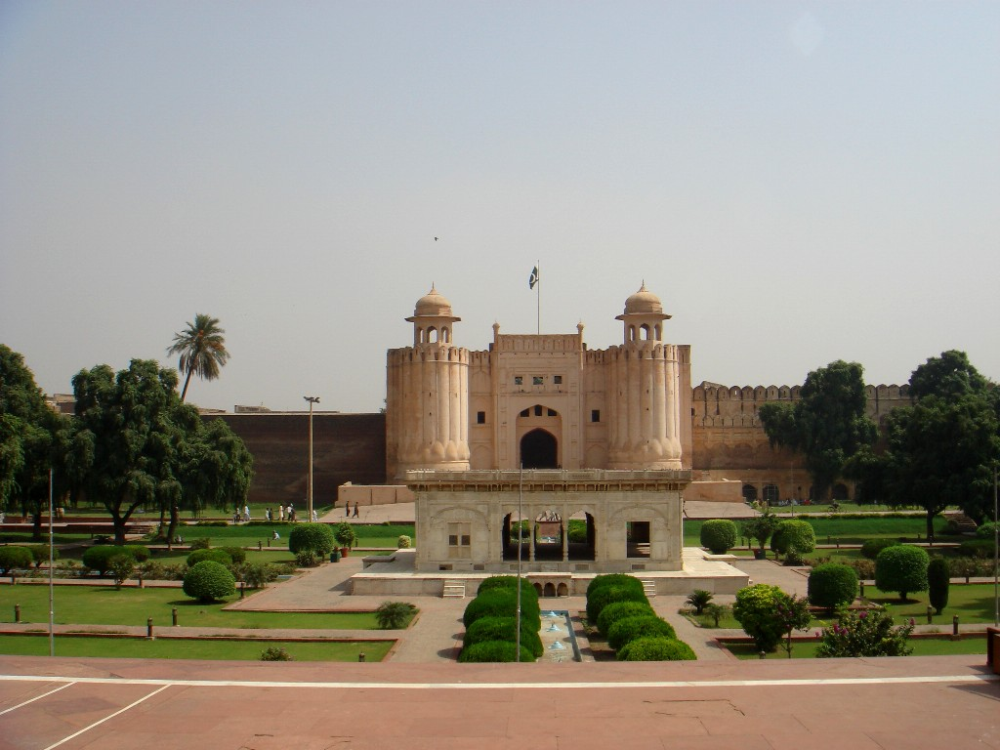

Step into the grandeur of empires that shaped a subcontinent—from the delicate pietra dura of royal tombs to the soaring domes of monumental mosques, where art, architecture, and faith converge.
The Mughal Golden Age
For over three centuries (1526-1857), the Mughal Empire ruled much of South Asia, creating an architectural and cultural legacy that defined the region. Pakistan, particularly Punjab and Sindh, holds some of the empire's most magnificent monuments. Lahore, the Mughals' favorite city, became a showcase of imperial power and aesthetic refinement. But the story of Islamic architecture in Pakistan begins centuries earlier, with the Ghaznavid and Delhi Sultanate periods, and continues through regional styles in Multan, Thatta, and Peshawar. This is a journey through centuries of Islamic civilization at its artistic peak.
Badshahi Mosque, Lahore

Lahore Fort / Alamgiri Gate
Mughal Masterpieces
Lahore Fort (Shahi Qila) — A UNESCO World Heritage Site, this vast fortress complex evolved over centuries but reached its zenith under Mughal emperors Akbar, Jahangir, and Shah Jahan. Highlights include the Sheesh Mahal (Palace of Mirrors), with thousands of glass mosaic pieces reflecting candlelight into a starry universe; the Naulakha Pavilion (featured on Pakistan's currency), a jewel-box of white marble and pietra dura inlay; the Picture Wall, with rare Mughal frescoes; and the vast courtyards where emperors held court. The fort sits beside the old city, with views over the Badshahi Mosque.
Badshahi Mosque, Lahore — Built in 1671 by Emperor Aurangzeb, this was the world's largest mosque for over three centuries. Its red sandstone walls and marble domes embody Mughal architectural power. The vast courtyard can hold 100,000 worshippers. Climb the minaret (with permission) for panoramic views of Lahore. The mosque remains an active place of worship and a symbol of Pakistani identity. Adjacent is the Hazuri Bagh and Ranjit Singh's samadhi, showing the layered history of Lahore under Sikh rule.
Shalimar Gardens, Lahore — UNESCO-listed Mughal gardens laid out in 1641 by Shah Jahan, the emperor who built the Taj Mahal. The gardens embody the Persian concept of paradise—geometric layout, flowing water, terraces representing different realms, marble pavilions, and hundreds of fountains. Visit at sunset when the amber light gilds the pavilions and the fountains are in full play. The gardens originally connected to the Ravi River; today they're an oasis of peace in modern Lahore.
Wazir Khan Mosque, Lahore — Often called Pakistan's most beautiful mosque, this 1641 masterpiece by Shah Jahan's governor features the subcontinent's finest Mughal-era frescoes and tile work. Every surface—walls, domes, minarets—is covered in intricate calligraphy, floral patterns, and glazed tiles. The mosque sits in Lahore's old city (Androon Shehr), accessible through the historic Delhi Gate. The surrounding bazaar retains medieval character.
Jahangir's Tomb, Lahore — The mausoleum of Emperor Jahangir (ruled 1605-1627) sits in a char bagh (four-part garden) in Shahdara, across the Ravi River. The tomb showcases the transition from Akbar's red sandstone style to Shah Jahan's white marble aesthetic. The pietra dura inlay, frescoes, and garden layout are superb. Nearby is the smaller but exquisite tomb of Asif Khan (brother of Empress Nur Jahan).
Shah Jahan Mosque, Thatta (Sindh) — Built 1647-1659, this mosque features the largest number of glazed tiles anywhere in the world—over 900,000 blue and white tiles cover the walls and 93 domes. The acoustics are remarkable—a whisper in one corner travels clearly to another. Thatta was an important port city and cultural center, and this mosque represents the Mughals' architectural influence extending into Sindh. The nearby Makli Necropolis (see below) adds to Thatta's heritage significance.
Rohtas Fort (Punjab) — A UNESCO World Heritage Site, this massive 16th-century fort was built by Sher Shah Suri (who briefly displaced the Mughals) to control the Gakhar tribes. Spanning 4 km of perimeter walls with 68 bastions and 12 monumental gates, Rohtas represents military architecture at its peak. Never conquered by force, the fort combines Central Asian and South Asian defensive innovations. The Haveli Man Singh and Shahi Mosque within show refined architecture alongside military functionality.
Pre-Mughal & Regional Islamic Architecture
Makli Necropolis, Thatta (Sindh) — One of the world's largest necropolises, spread over 10 km² with thousands of tombs dating from the 14th to 18th centuries. The site showcases diverse architectural styles—Gujarati, Mughal, Sindhi regional—in stone and brick. Notable tombs include those of Jam Nizamuddin II (with intricate stone carving), Isa Khan Tarkhan II, and Diwan Shurfa Khan. The sheer scale and artistic variety make Makli a unique heritage site, recognized by UNESCO.
Multan's Shrines & Tombs — Multan's architectural heritage includes the pre-Mughal tombs of Sufi saints (mentioned in our Sufi section) with distinctive blue-glazed tile domes. The tomb of Shah Rukn-e-Alam is an architectural masterpiece of the Tughluq period (1320s). Multan Fort, though largely in ruins, shows layers of Mughal and earlier construction.
Uch Sharif Monuments (Punjab/Sindh border) — UNESCO site with stunning 13th-15th century tombs featuring octagonal plans, tilework, and brick construction. These represent pre-Mughal Islamic architecture with Central Asian influences brought by Sufi saints and scholars.
Architectural Elements & Artistry
Pietra Dura Inlay
The Mughal technique of inlaying semi-precious stones (lapis lazuli, carnelian, jade, onyx) into white marble in floral and geometric patterns reached its apex under Shah Jahan. Lahore Fort's Naulakha and various tombs showcase this art, related to the Taj Mahal's decoration.
Tilework & Calligraphy
From Multan's blue domes to Wazir Khan's multi-colored frescoes to Thatta's white-on-blue tilework, glazed ceramics define Islamic architecture in Pakistan. Arabic and Persian calligraphy—Quranic verses, poetry, historical inscriptions—transforms buildings into sacred texts.
Garden Symbolism
Mughal gardens represent the Islamic concept of paradise (the word "paradise" derives from Persian "pairidaeza," meaning walled garden). Water channels symbolize the four rivers of paradise, pavilions offer contemplation spaces, and geometric order reflects divine harmony.
Synthesis of Traditions
Mughal architecture blends Persian, Central Asian, and Indian influences—the double domes from Persia, chattris (kiosks) from Rajput architecture, red sandstone and marble combinations creating visual contrast. This synthesis produced something uniquely Mughal.
Experiencing Mughal Lahore
The Walled City: Lahore's old city (Androon Shehr) retains its Mughal street plan. Walk through the narrow bazaars—food street in Gawalmandi, the spice markets, the traditional haveli courtyards being restored. The city thrums with life, a modern population living within Mughal bones.
Sound & Light: The Lahore Fort and Badshahi Mosque occasionally host evening sound-and-light shows narrating Mughal history. More significantly, experiencing the mosque at prayer time (from outside if you're not Muslim, or respectfully inside) shows these as living monuments, not museum pieces.
Festivals: Basant (kite festival, though officially restricted) and various melas (fairs) at Mughal monuments connect contemporary Pakistani culture with historical spaces. Cultural events, Qawwali performances at shrines, and celebrations of Mughal-era poets (like Waris Shah or Bulleh Shah) keep the cultural heritage alive.
Beyond Lahore
While Lahore dominates Mughal tourism, don't overlook Thatta in Sindh (combining Shah Jahan Mosque and Makli Necropolis), the rugged grandeur of Rohtas Fort, or the quieter Mughal gardens and tombs scattered across Punjab. Pakistan also has significant Islamic architecture from the Delhi Sultanate period, Pashtun tribal architecture in KP, and colonial-era mosques blending Islamic and British styles.
Practical Information
Access: Most major sites welcome tourists. Mosques require modest dress (covering arms, legs, and head for women) and shoe removal. Non-Muslims can usually visit mosques outside prayer times; some mosques (like Badshahi) have designated tourist entry procedures.
Photography: Generally permitted at historical sites, though ask before photographing worshippers. The golden hour light on red sandstone and white marble is magical—dawn and dusk visits are highly recommended for photographers.
Guides: Expert guides transform visits from superficial to profound—explaining symbolism, historical context, architectural innovations, and political intrigues. We work with historians and architects who can decode these monumental texts.
Discover the Mughal Legacy
From Lahore's imperial forts to Thatta's tiled mosques, experience Pakistan's Islamic architectural treasures with expert interpretation.